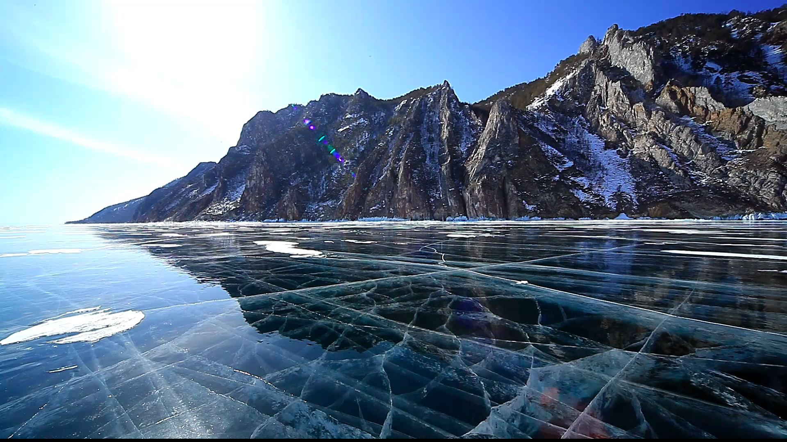
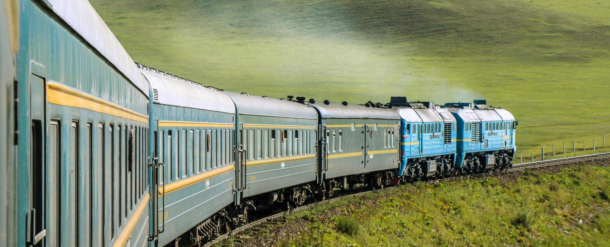
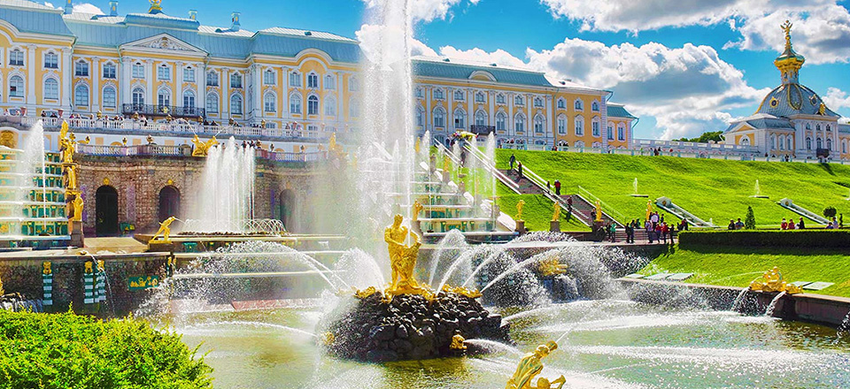

Fait № 1
La Russie est le plus grand pays du monde, avec une superficie d'environ 17 millions de kilomètres carrés. D'est en ouest, sa longueur couvre 10
fuseaux horaires à la fois.
Fait № 2
Le lac Baïkal, qui est considéré comme la plus grande source d'eau douce la plus pure de notre planète ! La profondeur du lac Baïkal est de 1642
mètres et le volume total de la couche d'eau est de plus de 20 kilomètres cubes. En chiffres, ce volume n'est pas très clair, mais pour clarifier,
donnons la comparaison suivante : si tous les plus grands fleuves du monde, de la Volga et Ienisseï à l'Amazone et au Nil, remplissent la dépression
du lac Baïkal, ils vont remplissez-le après 365 jours !

Fait № 3
La Russie est le seul État baigné par douze mers - la mer Baltique, noire, Azov, Barents, blanche, Kara, Laptev, sibérienne orientale, Tchoukotka,
Beringovo, Okhotsk et japonaise.
Fait № 4
Le plus grand volcan du monde, opérant au cours des 7 000 dernières années, est situé en Russie et s'appelle Klyuchevskaya Sopka. Le volcan mesure
environ 4 kilomètres et 850 mètres de haut, et les colonnes de cendres qu'il soulève atteignent jusqu'à 8 kilomètres. Avec chaque éruption suivante,
le volcan devient de plus en plus haut.
Fait № 5
Le Transsibérien est le chemin de fer le plus long du monde. La Grande Voie de Sibérie, qui relie Moscou à Vladivostok, mesure 9298 kilomètres de
long, traverse 8 fuseaux horaires, traverse 87 villes et villages et traverse 16 fleuves, dont la Volga.

Fait № 6
La Russie a des frontières avec 16 pays : Norvège, Finlande, Estonie, Lettonie, Lituanie, Pologne, Biélorussie, Ukraine, Géorgie, Azerbaïdjan,
Kazakhstan, Chine, Mongolie, Corée du Nord, Japon et États-Unis. La Russie est également limitrophe de deux États non reconnus : l'Ossétie du Sud et
l'Abkhazie.
Fait № 7
En Russie, il y a la forêt la plus grande, la plus dense et pratiquement sauvage du monde - c'est la taïga sibérienne, dont la moitié n'a même
pas été maîtrisée par l'homme.
Fait № 8
Peterhof est situé en Russie - l'un des complexes de palais et de parcs les plus beaux et les plus étonnants au monde. En plus des magnifiques
palais de Peterhof, il existe un grand nombre de fontaines, au nombre d'environ 176, qui étonnent non seulement par leur beauté, mais aussi par leur
taille, car 40 d'entre elles sont vraiment gigantesques.

Fait № 9
Au XVIIIe siècle, la Russie était le 3e plus grand empire de l'histoire de l'humanité, s'étendant de la Pologne européenne à l'Alaska nord-américain.
Fait № 10
Il existe de nombreux excellents itinéraires d'excursion et touristiques en Russie. Les soi-disant "familles de routes touristiques" les plus célèbres
sont l'Anneau d'or de Russie, l'Anneau d'argent de Russie et le Grand Anneau de l'Oural.
|
|